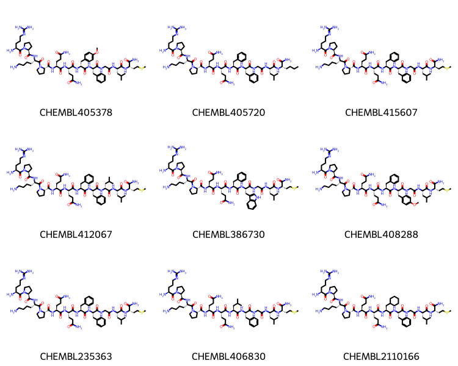

Using compound similarity to define document similarity
Published
February 2, 2025
For a couple of other ideas I want to explore, I need some “clumpy” sets of compounds: a group of compounds with a number of separate clusters of different sizes and cohesiveness (I’m not sure what the right word here is, I mean how tightly packed the cluster is). As I almost always do, I’m going to do this using data from ChEMBL and I will use groups of compounds from individual med chem papers as my clumps. Since I want clumpiness at different similarity ranges, I want to be able to find groups of “related” papers: papers with similar compounds. This post is a first step towards finding those related papers.
There’s an old ChEMBL blog post about document similarity. Not too long after that, I did a blog post with a related approach. This time instead of looking at the number of highly similar compounds between papers, I’m going to look at the median similarity between the compounds the papers..
I start by comparing at the distribution of similarities between compounds in med chem papers to those between papers in order to demonstrate that there is a significant difference there. To do this I pick a random sample of 20000 documents with between 20 and 100 compounds and use the usual Morgan fingerprint with radius 2 (there are plots below for radius 3 as well).
Here are the distributions of the median compound similarities within the papers and the median similarities between 500K random pairs of papers:
image.png
The plot also contains lines showing the threshold values for similarity between random compounds and related compounds taken from this blog post. Unsurprisingly, the intra-paper similarity values tend to be significantly higher than the inter-paper similarity values. The intra-paper similarity values tend to be above the “related” threshold value while the inter-paper values are below the “random” threshold value.
Moving on to finding related documents. One simple measure for document similarity is to count how many exact matches they have in common. This isn’t particularly interesting for my purposes, so I chose to focus on pairs of documents that have high ratios of compounds that have similarities above the “related” threshold. Here’s the overall distribution for fraction of exact matches, and fraction of pairs above the “random” and “related” thresholds for a set of 20 million random document pairs:
image-2.png
Looking through the papers with the highest “related” fraction shows that they contain peptides or other large molecules. This is less useful for me, so I’m going to come back to this in a follow-up post where I either limit the size of the compounds considered or use a count-based fingerprint to calculate similarity so that larger molecules don’t automatically have higher similarity scores.|
Start by getting a collection of documents with between 20 and 100 compounds; this is my normal heuristic for trying to get med chem papers.
%sql postgresql://localhost/chembl_35 \ select doc_id,count(distinct molregno) cnt into temporary table doc_compound_counts \from docs join compound_records using (doc_id) join compound_structures using (molregno) \ group by (doc_id);
[]
%sql \ select count(*) from doc_compound_counts where cnt>=20and cnt<=100;
* postgresql://localhost/chembl_35
count
34821
docs =%sql \ select doc_id from doc_compound_counts tablesample bernoulli(80) repeatable (8723346) \ where cnt>=20and cnt<=100 limit 20000;len(docs)
* postgresql://localhost/chembl_35
20000
Generate fingerprints for the compounds from the papers
fpg2 = rdFingerprintGenerator.GetMorganGenerator(radius=2)fpg3 = rdFingerprintGenerator.GetMorganGenerator(radius=3)fps2 = {}fps3 = {}for doc_id in docs: doc_id = doc_id[0] pkls =%sql postgresql://localhost/chembl_35 \ select molregno,mol_to_pkl(m) from rdk.mols join compound_records using (molregno) \ where doc_id=:doc_id ms = [Chem.Mol(x[1].tobytes()) for x in pkls] fps2[doc_id] = fpg2.GetFingerprints(ms) fps3[doc_id] = fpg3.GetFingerprints(ms)
Intra- and inter-paper similarity distributions
Calculate intra-paper similarity distributions
sims2 = {}sims3 = {}for idx,doc_id inenumerate(docs):ifnot idx%1000:print(f'Done {idx}') doc_id = doc_id[0] a = [] fps = fps2[doc_id]for i inrange(1,len(fps)): a.extend(DataStructs.BulkTanimotoSimilarity(fps[i],fps[0:i])) sims2[doc_id] = np.quantile(a,[0.5,0.9,0.95,0.99]) a = [] fps = fps3[doc_id]for i inrange(1,len(fps)): a.extend(DataStructs.BulkTanimotoSimilarity(fps[i],fps[0:i])) sims3[doc_id] = np.quantile(a,[0.5,0.9,0.95,0.99])
plt.figure(figsize=(8,8))plt.subplot(2,1,1)plt.hist([[x[0] for x in sims2.values()],[x[0] for x in sims3.values()]],bins=20,label=(['mfp2','mfp3']));plt.xlabel('median intra-doc similarity');plt.legend();plt.subplot(2,1,2)plt.hist([[x[2] for x in sims2.values()],[x[2] for x in sims3.values()]],bins=20,label=(['mfp2','mfp3']));plt.xlabel('95% intra-doc similarity');plt.legend();
Now calculate the inter-paper similarity distributions; I’ll choose 500,000 random pairs for this:
target =500000import randomimport mathimport time# from: https://stackoverflow.com/a/55245866def decode(i): k = math.floor((1+math.sqrt(1+8*i))/2)return k,i-k*(k-1)//2def rand_pairs(n,m):return [decode(i) for i in random.sample(range(n*(n-1)//2),m)]pairs = rand_pairs(len(docs),target)pairs = [(docs[i][0],docs[j][0]) for i,j in pairs]inter_sims2 = {}related_sims2 = {}inter_sims3 = {}related_sims3 = {}for idx inrange(target):ifnot idx%(target//20):print(f'Done {idx}') di,dj = pairs[idx] a = [] fpsi = fps2[di] fpsj = fps2[dj]for i inrange(len(fpsi)): a.extend(DataStructs.BulkTanimotoSimilarity(fpsi[i],fpsj)) inter_sims2[(di,dj)] = np.quantile(a,[0.5,0.9,0.95,0.99]) related_sims2[(di,dj)] = (len([1for x in a if x>0.27]),len([1for x in a if x>0.4]),len(fpsi),len(fpsj)) a = [] fpsi = fps3[di] fpsj = fps3[dj]for i inrange(len(fpsi)): a.extend(DataStructs.BulkTanimotoSimilarity(fpsi[i],fpsj)) inter_sims3[(di,dj)] = np.quantile(a,[0.5,0.9,0.95,0.99]) related_sims3[(di,dj)] = (len([1for x in a if x>0.22]),len([1for x in a if x>0.3]),len(fpsi),len(fpsj) )
The line labeled noise in the plot below is the “noise level” for the fingerprint - the 95% threshold for similarity between random compound. The dashed line labeled “related” is the threshold level for compounds which are related to each other. You can find more information about these definitions in this blog post
plt.figure(figsize=(8,8))plt.subplot(2,1,1)plt.hist([[x[0] for x in sims2.values()],[x[0] for x in inter_sims2.values()]],bins=20, label=(['intra-document','inter-document']),density=True);ymax = plt.ylim()[1]plt.plot([0.27,0.27],[0,ymax],'k-',label='noise')plt.plot([0.4,0.4],[0,ymax],'k--',label='related')plt.xlabel('median mfp2 similarity');plt.legend();plt.subplot(2,1,2)plt.hist([[x[2] for x in sims2.values()],[x[2] for x in inter_sims2.values()]],bins=20, label=(['intra-document','inter-document']),density=True);ymax = plt.ylim()[1]plt.plot([0.22,0.22],[0,ymax],'k-',label='noise')plt.plot([0.35,0.35],[0,ymax],'k--',label='related')plt.xlabel('95% mfp2 similarity');plt.legend();
Get just the first of those plots, because that’s what we’ll use in the summary above:
plt.figure(figsize=(8,4))plt.hist([[x[0] for x in sims2.values()],[x[0] for x in inter_sims2.values()]],bins=20, label=(['intra-document','inter-document']),density=True);ymax = plt.ylim()[1]plt.plot([0.27,0.27],[0,ymax],'k-',label='noise')plt.plot([0.4,0.4],[0,ymax],'k--',label='related')plt.xlabel('median mfp2 similarity');plt.legend();
np.quantile([x[0] for x in sims2.values()],[0.5,0.9,0.95,0.99])
array([0.48979592, 0.65753425, 0.7 , 0.78703901])
np.quantile([x[0] for x in inter_sims2.values()],[0.5,0.9,0.95,0.99])
Get the molregnos for the compounds in all the papers. We will use these to identify overlapping compounds and to retrieve the compounds themselves
mrns = {}for doc_id in docs: doc_id = doc_id[0] pkls =%sql postgresql://localhost/chembl_35 \ select molregno from rdk.mols join compound_records using (molregno) \ where doc_id=:doc_id mrns[doc_id] = [x[0] for x in pkls]
(len(docs)*(len(docs)-1))//2
199990000
I’ll look at 10,000,000 random pairs of documents:
pairs2 = rand_pairs(len(docs),10000000)pairs2 = [(docs[i][0],docs[j][0]) for i,j in pairs2]
For each pair calculate the number of compounds in common and the fractions of compound pairs with similarity values above the random and related thresholds.
mrn_overlaps = []noise_sim_overlaps = []related_sim_overlaps = []for idx inrange(len(pairs2)):ifnot idx%(len(pairs2)//20):print(f'Done {idx}') di,dj = pairs2[idx] mrnsi =set(mrns[di]) mrnsj =set(mrns[dj]) mrn_overlaps.append(len(mrnsi.intersection(mrnsj))/(len(mrnsi)+len(mrnsj)-len(mrnsi.intersection(mrnsj))))if (di,dj) notin related_sims2: a = [] fpsi = fps2[di] fpsj = fps2[dj]for i inrange(len(fpsi)): a.extend(DataStructs.BulkTanimotoSimilarity(fpsi[i],fpsj)) inter_sims2[(di,dj)] = np.quantile(a,[0.5,0.9,0.95,0.99]) related_sims2[(di,dj)] = (len([1for x in a if x>0.27]),len([1for x in a if x>0.4]),len(fpsi),len(fpsj)) noise,related,ni,nj = related_sims2[(di,dj)] denom = ni*nj noise_sim_overlaps.append(noise/denom) related_sim_overlaps.append(related/denom)
len(inter_sims2),len([1for v in inter_sims2.values() if v[0]>0.27]),len([1for v in inter_sims2.values() if v[0]>0.4])
(10474902, 6329, 707)
Look at the fraction of exact matches, the fraction of pairs of compounds with similarity above the random threshold, and the fraction of pairs of compounds with similarity above the related threshold:
didi,didj = pairs2[1606]pklsi =%sql postgresql://localhost/chembl_35 \ select chembl_id,mol_to_pkl(m) from rdk.mols join compound_records using (molregno) \ join chembl_id_lookup on (molregno=entity_id and entity_type='COMPOUND') \ where doc_id=:didimolsi = [(x,Chem.Mol(y.tobytes())) for x,y in pklsi]pklsj =%sql postgresql://localhost/chembl_35 \ select chembl_id,mol_to_pkl(m) from rdk.mols join compound_records using (molregno) \ join chembl_id_lookup on (molregno=entity_id and entity_type='COMPOUND') \ where doc_id=:didjmolsj = [(x,Chem.Mol(y.tobytes())) for x,y in pklsj]
len(molsi),len(molsj)
(45, 26)
Draw.MolsToGridImage([y for x,y in molsi][:12],legends=[x for x,y in molsi],molsPerRow=4)
Draw.MolsToGridImage([y for x,y in molsj][:12],legends=[x for x,y in molsj],molsPerRow=4)
Anb bibliographic info on those:
%sql postgresql://localhost/chembl_35 \ select doc_id,title,authors from docs where doc_id in (:didi,:didj)
doc_id
title
authors
9752
Synthesis and hypolipidemic activity of 2-substituted isobutyric acid derivatives.
Morishita S, Saito T, Hirai Y, Shoji M, Mishima Y, Kawakami M.
15546
Synthesis and immunosuppressive activity of 2-substituted 2-aminopropane-1,3-diols and 2-aminoethanols.
Kiuchi M, Adachi K, Kohara T, Minoguchi M, Hanano T, Aoki Y, Mishina T, Arita M, Nakao N, Ohtsuki M, Hoshino Y, Teshima K, Chiba K, Sasaki S, Fujita T.
Look about a pair with a high fraction of “related” structures but a small number of exact matches:
[(i,ovl,noise_sim_overlaps[i],mrn_overlaps[i]) for i,ovl inenumerate(related_sim_overlaps) if ovl>0.5][:2]
didi,didj = pairs2[6704]pklsi =%sql postgresql://localhost/chembl_35 \ select chembl_id,mol_to_pkl(m) from rdk.mols join compound_records using (molregno) \ join chembl_id_lookup on (molregno=entity_id and entity_type='COMPOUND') \ where doc_id=:didimolsi = [(x,Chem.Mol(y.tobytes())) for x,y in pklsi]pklsj =%sql postgresql://localhost/chembl_35 \ select chembl_id,mol_to_pkl(m) from rdk.mols join compound_records using (molregno) \ join chembl_id_lookup on (molregno=entity_id and entity_type='COMPOUND') \ where doc_id=:didjmolsj = [(x,Chem.Mol(y.tobytes())) for x,y in pklsj]len(molsi),len(molsj)
(21, 30)
Draw.MolsToGridImage([y for x,y in molsi][1:10],legends=[x for x,y in molsi[1:]],molsPerRow=3,subImgSize=(250,200))
Draw.MolsToGridImage([y for x,y in molsj][1:10],legends=[x for x,y in molsj[1:]],molsPerRow=3,subImgSize=(250,200))
%sql postgresql://localhost/chembl_35 \ select doc_id,title,authors from docs where doc_id in (:didi,:didj)
doc_id
title
authors
5559
Synthesis, stereochemical assignment and biological activity of a novel series of C-4" modified aza-macrolides.
didi,didj = ordered[0][1]pklsi =%sql postgresql://localhost/chembl_35 \ select chembl_id,mol_to_pkl(m) from rdk.mols join compound_records using (molregno) \ join chembl_id_lookup on (molregno=entity_id and entity_type='COMPOUND') \ where doc_id=:didimolsi = [(x,Chem.Mol(y.tobytes())) for x,y in pklsi]pklsj =%sql postgresql://localhost/chembl_35 \ select chembl_id,mol_to_pkl(m) from rdk.mols join compound_records using (molregno) \ join chembl_id_lookup on (molregno=entity_id and entity_type='COMPOUND') \ where doc_id=:didjmolsj = [(x,Chem.Mol(y.tobytes())) for x,y in pklsj]
Draw.MolsToGridImage([y for x,y in molsi][1:10],legends=[x for x,y in molsi[1:]],molsPerRow=3,subImgSize=(250,200))
Draw.MolsToGridImage([y for x,y in molsj][1:10],legends=[x for x,y in molsj[1:]],molsPerRow=3,subImgSize=(250,200))

%sql postgresql://localhost/chembl_35 \ select doc_id,title,authors from docs where doc_id in (:didi,:didj)
doc_id
title
authors
7482
Synthesis of peptides by the solid-phase method. 7. Substance P and analogues.
Fournier A, Couture R, Regoli D, Gendreau M, St-Pierre S.
12331
Design and synthesis of side-chain conformationally restricted phenylalanines and their use for structure-activity studies on tachykinin NK-1 receptor.
Josien H, Lavielle S, Brunissen A, Saffroy M, Torrens Y, Beaujouan JC, Glowinski J, Chassaing G.
I looked at a number of different highly ranked document pairs here and they all contain peptides or other fairly large molecules. This makes sense given that I am using a bit vector fingerprint for similarity, but isn’t ideal for what I am trying to do. In a followup post I will explore a bit deeper into the list of highly ranked documents and/or try using count-based fingerprints.